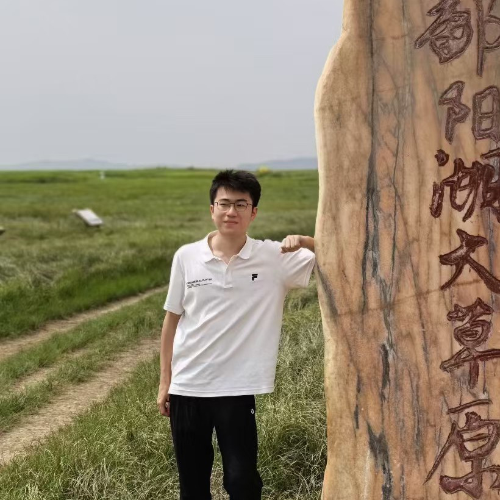
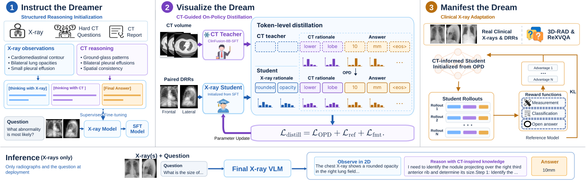
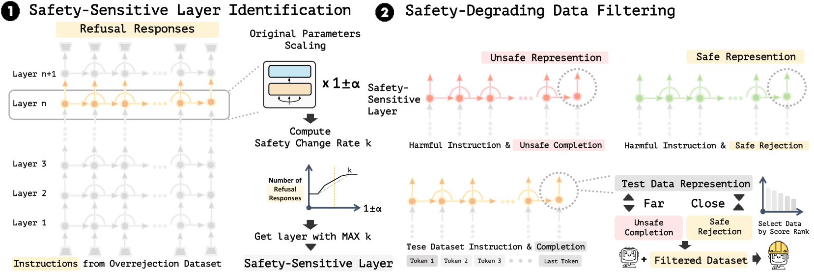
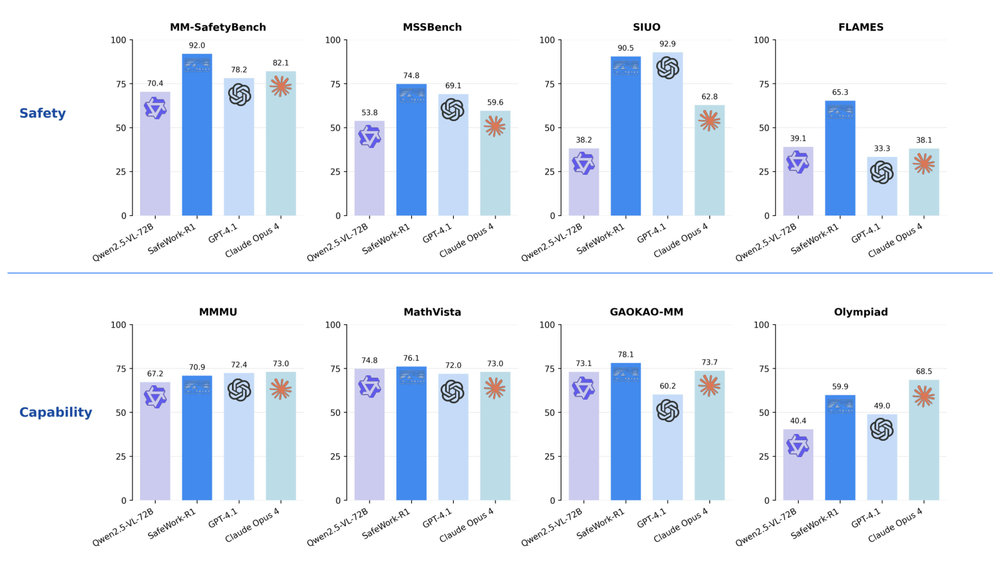

|
Zhenghao Lu | 鲁正豪 I am a first-year Master's student at Zhejiang University, working with Prof. Zuozhu Liu at ZZLab. Previously, I received my bachelor's degree from the School of Software at Beihang University (2022–2026). From March 2025 to June 2025, I worked as a research intern at the Shanghai Artificial Intelligence Laboratory, mentored by Lijun Li, focusing on LLM safety alignment. My research focuses on Medical AI, including medical vision-language models, multimodal clinical reasoning, and trustworthy AI. |
 “每个人都在愤世嫉俗， |

Publications 📚
* indicates equal contribution, † indicates corresponding author
|
 |
DiCT: Teaching X-ray Vision-Language Models to Reason via Imagining CT
Zhenghao Lu*, Xiaotian Zhang*, Songtao Jiang, Yiqun Lin, Siming Fu, Hualiang Wang†, Zuozhu Liu† arXiv preprint, 2026 arXiv / code DiCT is a three-stage progressive CT-to-X-ray reasoning transfer framework that equips X-ray vision-language models with CT-informed 3D radiological reasoning directly from 2D X-rays without explicit CT reconstruction at inference time. |
|
 |
Layer-Aware Representation Filtering: Purifying Finetuning Data to Preserve LLM Safety Alignment
Hao Li*, Lijun Li*†, Zhenghao Lu, Xianyi Wei, Rui Li, Jing Shao†, Lei Sha† EMNLP, 2025 paper / arXiv / code LARF identifies safety-sensitive layers in aligned LLMs and leverages their internal representations to detect and filter seemingly benign finetuning samples that carry safety-degrading features. |
|
 |
SafeWork-R1: Coevolving Safety and Intelligence under the AI-45° Law
Shanghai Artificial Intelligence Laboratory (Contributor: Zhenghao Lu) arXiv preprint, 2025 arXiv / models SafeWork-R1 is a multimodal reasoning model trained under the SafeLadder progressive safety-oriented reinforcement learning framework with multi-principled verifiers, enabling safety and general intelligence to co-evolve. |
Education
- Zhejiang University — M.S. Student, ZZLab, 2026 – Present
- Beihang University — B.Eng., School of Software, 2022 – 2026
Experience
- Shanghai Artificial Intelligence Laboratory — Research Intern (Mentor: Lijun Li), Mar. 2025 – Jun. 2025
Selected Awards
- Special-Grade Scholarship (top 3%), Beihang University, 2022–2023
Misc
- Sports: Big fan of the Philadelphia 76ers and Chelsea F.C.; my favorite players are LeBron James and Reece James. 🏀⚽
- Anime & Games: I enjoy watching Japanese anime and playing the Pokémon game series. ✨🎮
- Food: As a native of Guangdong (广东), I love Cantonese cuisine (粤菜), especially Cantonese roast meats (烧腊) and Chaoshan (潮汕) beef hot pot. 🍖🍲🥢